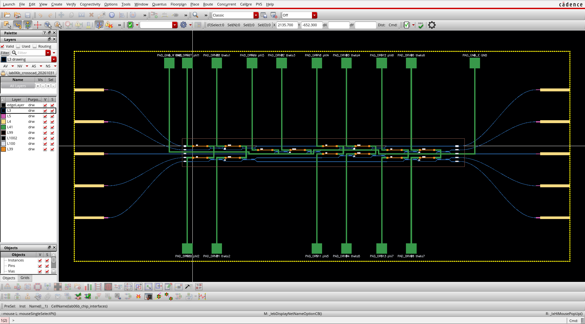
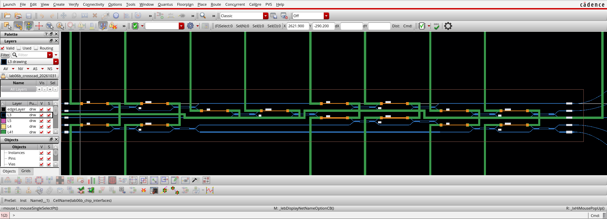
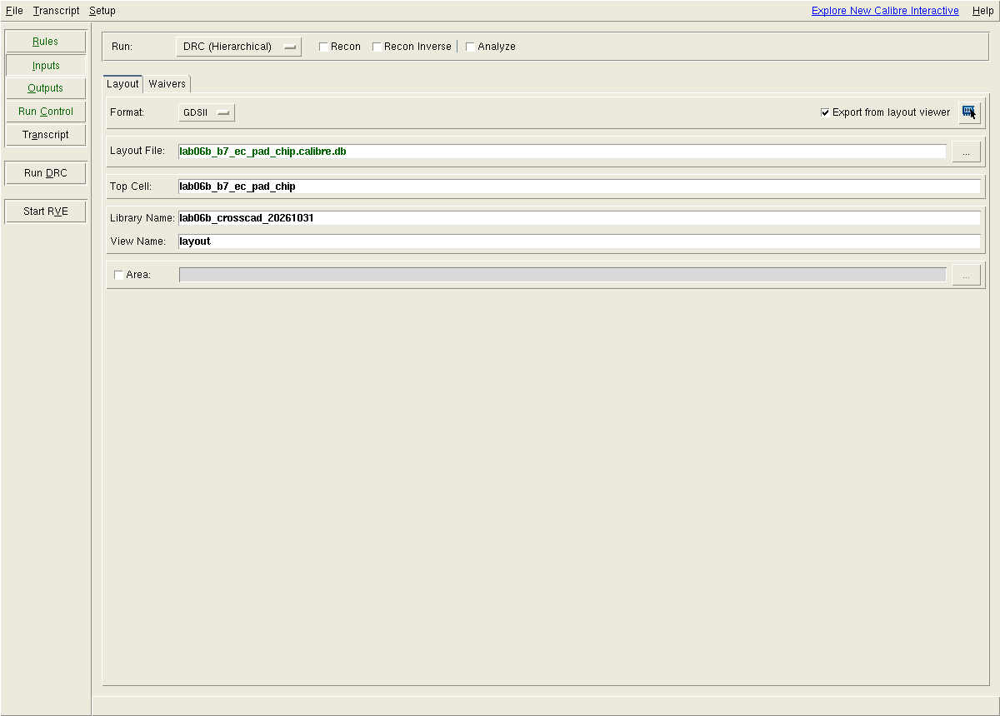
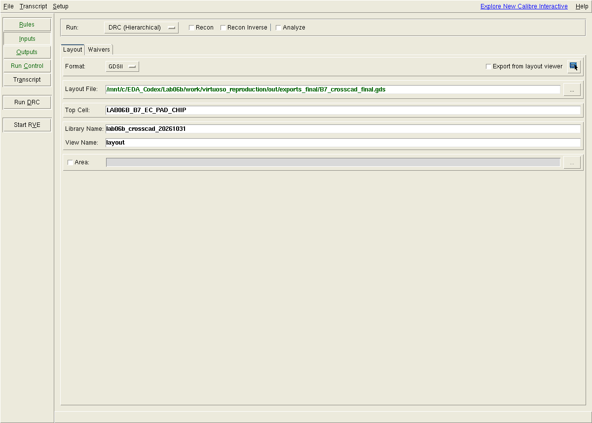
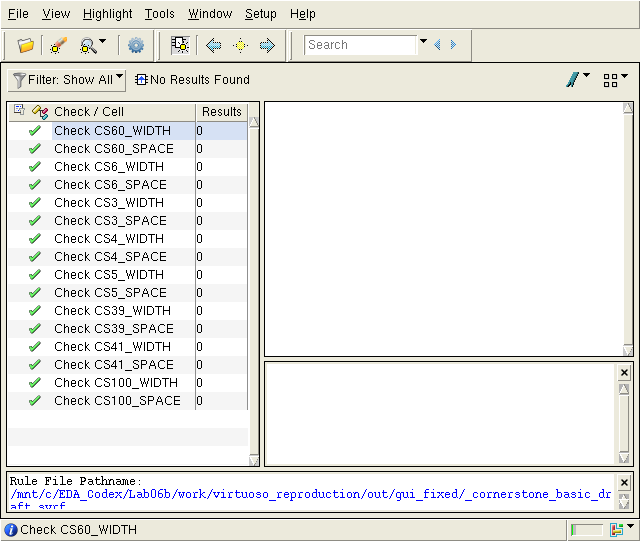

Virtuoso／Calibre：我的完整實機重現
以現行 Lab06b 的七顆 MZI 晶片，重新完成匯入、顯示、Interactive／RVE 檢查、XStream 修正與乾淨 OA 重播。
我的檔案放在哪裡
唯一正式工作區是 C:\EDA_Codex\Lab06b；D 槽唯讀。總報告在根目錄 Lab06b_index.html；本頁也完整內嵌於總報告的「實機重現」章。
C:\EDA_Codex\Lab06b\
Lab06b_index.html # 完整單頁總報告
course\virtuoso_calibre.html # 本章分頁
work\virtuoso_reproduction\
out\reproduction_results.json # 本日結果與 SHA 綁定
out\screenshots\ # 原生視窗截圖，未改像素
out\gui_auto\ # GUI 自動匯出／8 筆對照
out\gui_fixed\ # GUI 最終 16 項／0 筆、RVE db
out\exports_final\B7_crosscad_final.gds
work\oa_crosscad\lab06b_crosscad_20261031\ # 本機實際 OA
delivery\virtuoso_calibre\ # 可攜檔與重播說明
delivery\Lab06b_Virtuoso_Calibre_reproduction.zip全部結果 JSON · 新版互通檔索引 · 重播說明 · 下載本次封裝
⑥ 實測：WSL EDA_Server 的 Virtuoso 可匯入並顯示
我使用 Virtuoso IC23.1-64b.ISR15.37，將現行 S6 GDS 與另存的跨工具註記修正版，分別匯入兩個新 OA library。工作檔全部位於 C 槽；WSL 透過 /mnt/c/EDA_Codex/Lab06b 讀寫。原始 S6 GDS、M1 相位、規格與 M1／M2 ZIP 均保留。
| 項目 | 本次結果 |
|---|---|
| 工具 | WSL EDA_Server／AlmaLinux 8.10；Virtuoso IC23.1-64b.ISR15.37；Calibre 2026.1_17.11 |
| 原始版 OA | lab06b_current_20261031／lab06b_b7_ec_pad_chip／layout |
| 跨工具版 OA | lab06b_crosscad_20261031／lab06b_b7_ec_pad_chip／layout |
| 階層與文字 | 43 cells、58 instances（全階層）、16 GDS1002 TEXT；頂層直接含 2 instances |
| 實際外框 | [-920,−900] → [2940,740] µm，3860×1640 µm |
| 名稱處理 | C 槽 OA 使用明確的小寫 cell 名；43 筆一對一，無大小寫碰撞。GDS 匯出以 cell map 還原原名，文字保留大小寫。 |
| 技術庫範圍 | Stream-In 自動建立的圖層技術庫；缺少 validLayers／validVias constraint group，Layout XL extractor 已停用。此畫面證明 OA 可讀與幾何可見。 |




原始版匯入 log · 跨工具版匯入 log · 最終 OA 原生回讀 · 43 筆名稱表
⑦ 實測：Virtuoso → Calibre Interactive／RVE
我載入本機 Calibre 整合，由 Virtuoso 的 Calibre → Run nmDRC 選單建立 layout-server，再以相同 server 連接 Calibre 2026.1 的 classic Interactive。Windows 輸入控制曾回報 GetCursorPos 拒絕存取，因此本次使用原生 Linux 的 Virtuoso SKILL 與 Calibre Tcl 視窗控制項執行；Run DRC／Start RVE 按鈕確實被呼叫並產生新結果。
新式 Qt Runset 與 classic Runset 格式不同。我在 classic GUI 重新設定 Rules／Inputs，並用 Save Runset As 實際儲存兩份 Runset。封裝提供此次 GUI 儲存的版本，保留格式與使用版本。
| 設定 | GUI 自動匯出 | GUI 讀取 8191 點最終檔 |
|---|---|---|
| Export from layout viewer | 勾選；由 lab06b_crosscad_20261031 的 layout 匯出 | 取消勾選；直接讀 B7_crosscad_final.gds |
| Top cell | lab06b_b7_ec_pad_chip（OA 小寫） | LAB06B_B7_EC_PAD_CHIP（GDS 原名） |
| 獨立目錄 | out/gui_auto | out/gui_fixed |
| 同一份自寫 Calibre 草稿 | 16 項，0 results | 16 項，0 results |
| 原始 KLayout pre-DRC 交叉檢查 | 31 類，8 records | 31 類，0 records |
| 實際 GUI Runset | 自動匯出 Runset | 最終檔 Runset |






第一次完整 GUI transcript · 最終 GUI transcript（含 RVE db 路徑） · 最終 summary · 最終 RVE database
⑧ 實測：maxVertices 200 → 8191，8 筆降為 0 筆
GUI 自動匯出在長曲線產生額外切割接縫；與未切割的註記修正版相比，只有 GDS3 出現 25744 nm² 的 XOR 差異。相同原始 pre-DRC deck 找到 8 筆。為確認原因，我也從未改註記的原始版 OA，明確設定 200 與 8191 做 A/B 匯出；再次得到 8 → 0。
| GDS | maxVertices | GDS3 XOR／參考 | 原始 pre-DRC |
|---|---|---|---|
| 原始版 OA 匯出 A | 200 | 25744 nm²／S6 原版 | 8 |
| 原始版 OA 匯出 B | 8191 | 0／S6 原版；其餘圖層與 16 TEXT 相同 | 0 |
| GUI 自動匯出 | 工具預設；未傳 maxVertices | 25744 nm²／註記修正版 | 8 |
| 跨工具最終 OA 匯出 | 明確 8191 | 0／註記修正版；全 7 層、43 cell 原名與 16 TEXT 相同 | 0 |
# 在 WSL EDA_Server，先切至本次 OA 的 cds.lib 目錄：
cd /mnt/c/EDA_Codex/Lab06b/work/virtuoso_reproduction/work/oa_crosscad
strmout -library lab06b_crosscad_20261031 \
-topCell lab06b_b7_ec_pad_chip -view layout \
-strmFile /mnt/c/EDA_Codex/Lab06b/work/virtuoso_reproduction/out/exports_final/B7_crosscad_final.gds \
-layerMap ../../out/exports/layer.map \
-cellMap ../../out/exports_final/cell.map \
-maxVertices 8191 -dbuPerUU 1000 -labelCase preserve最終 strmout log · 原始版 200／8191 幾何比較 · 最終 GDS XOR／TEXT／接線 · 五份 GDS 同 deck 結果 · 最終完整 pre-DRC report
我額外處理的跨工具字形間距差異
原始 S6 GDS 通過既有 KLayout pre-DRC，但同一份 GDS 在自寫 Calibre 草稿得到 27 筆，全部位於 CS100_SPACE。角度掃描顯示兩個引擎的角度過濾語意不同；我沒有刪除規則或把這些結果隱藏。
我只在 GDS100 把 19 個註記群以原中心放大 1.3 倍，另存跨工具版本；GDS3／4／5／39／41／99 六個實體圖層 XOR 全為 0，GDS1002 的 16 個文字也不變。相同 Calibre 草稿由 27 降至 0，原始 KLayout pre-DRC 仍為 0。原始 S6 採用索引與 M1／M2 ZIP 不替換。
| 資料 | 結果 | 用途 |
|---|---|---|
| 原始 S6 | 27，全為 CS100_SPACE | 保留真實跨引擎差異 |
| 獨立故障 GDS | 16 條規則各 1 筆，共 16 | 確認每條 width／space 規則能抓到已知故障 |
| 註記修正版與最終 OA 匯出 | 0；原始 KLayout deck 也為 0 | 建立另存的跨工具互通檔 |
| 最終材料接線 | 15 金屬網、14 heater、66 光學端點、33 組連接均通過 | 由實際 GDS 抽取；與規則零筆分別驗證 |
字形角度診斷 · 19 群修改與 XOR · 原版 27 筆 · 負例 16 筆 · 未改動草稿
從空白 OA 重播：我確實再做了一次
我在新的空目錄，只放入原始 S6 GDS、註記演算法、名稱／圖層表與相同規則；重新建立兩個 OA library，重新匯出，再跑 Calibre、原始 KLayout pre-DRC 與幾何接線。沒有沿用既有 OA 或已匯出的 GDS。
| 檢查 | 實際結果 |
|---|---|
| 原始 OA 200／8191 | pre-DRC 8／0；200 XOR25744 nm²、8191 XOR0 |
| 跨工具最終版 | pre-DRC 0；Calibre 草稿 0；7 圖層與本次最終檔 XOR0 |
| 負例 | 16 條規則各 1 筆 |
| 幾何接線 | 15 金屬網／14 heater／33 光學連接通過 |
| GDS 原始 SHA | 每份原始 SHA 保存；native 輸出含日期，不要求每輪 raw SHA 相同，另做實際幾何、名稱、文字比對 |
# Windows PowerShell：準備新目錄，絕不覆寫上一輪 OA
& 'C:\luceda\luceda_2026033\envs\device_sim\python.exe' C:\EDA_Codex\Lab06b\work\virtuoso_reproduction\replay_prepare.py
# 在已安裝／可授權的 WSL EDA_Server 執行原生工具：
wsl.exe -d EDA_Server -- bash /mnt/c/EDA_Codex/Lab06b/work/virtuoso_reproduction/replay_native.sh
# 原始 deck、幾何、接線與正負例結果核對：
& 'C:\luceda\luceda_2026033\envs\device_sim\python.exe' C:\EDA_Codex\Lab06b\work\virtuoso_reproduction\verify_clean.py乾淨重播結果 · 乾淨重播幾何與接線 · 重播來源 · GUI 重播的前置條件與操作
結果範圍與來源
本次完成新版 PIC 的 OA 匯入、原生畫面、Interactive／RVE、規則正負例、切割差異修正、跨工具註記修正與乾淨重播。16 條 Calibre 規則是既有自寫 width／space 草稿，31 類為原始 CORNERSTONE pre-DRC；都沒有因此升級為 foundry 完整 DRC／LVS 簽核。實際 EC、MMI、heater、封裝與光電功能仍需要校準與量測。
光子曲線的角度條件與一般正交版圖不同，可參考 Siemens 的矽光子 DRC 說明。本頁所有通過／失敗數字以本機原始輸出為準。
原始 S6 SHA-256：0a8bece1fddd9e10a5cac8369ac57259f5775735b4f5ef6758ab76ceddc23963
跨工具最終 GDS SHA-256：f6e09bad9fc25cd556772ecbb97cd602a9e3afed5a167a6a4f1d4c1711b247e0